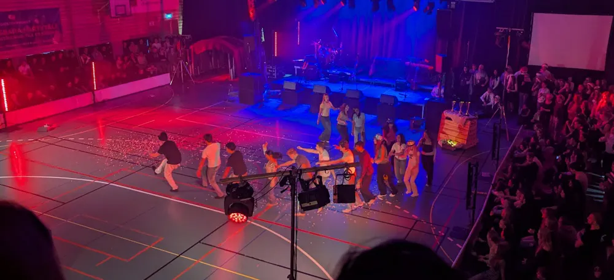

Insändare

Vinnande Klassdans; Ett Recept
Detta är vad jag, i egenskap av att ha varit en del av en vinnande klassdans, tror är avgörande faktorer. Ta inte detta som gospel, utan se det som "det här har funkat innan och kanske funkar igen."
1. Commitment. Var drivna, få med många och ha helst några som styr upp det. Tack och lov så har vi i Sabe23 två fantastiska dansare som fixade med koreografi och låtval samt lärde oss allting, men det är inget krav.
2. Börja tidigt, och gör klassdansen när ni går i tvåan. Ni får tid på idrottslektionerna att öva på dansen i tvåan, så gör det mesta av det, och lägg in lite extra pass så att det sitter. Dansen kommer att ta tid att lära sig, och resterande arbete utöver dansen tar ännu längre tid.
3. Det enda dans-kriteriet är att det ska se bra ut. Enkla rörelser som ser snygga ut i stor grupp är att föredra över komplexa rörelser. Publiken vet 9/10 gånger inte hur man dansar, och kommer snarare bedöma er på hur de upplevde er dans, därmed:
4. Publiken ska inte våga titta bort. Om er dans ska bli ihågkommen som "den bästa" tills det är dags för omröstning behöver den göra ett intryck. Publikmedlemmar som inte kollar på er dans får sällan intryck, så saker ska hända hela tiden. Gör inte samma move om och om igen, och ha inte samma låt för länge. Överraska gärna med något nytt eller någon aktuell trend, och ha inte samma gamla låtar som alltid är med i klassdansen (Everybody eller All I want for Christmas, t.ex.) då ni, om ni inte är först, riskerar att ses som kopior.
5. Kom ihåg att det först och främst är för er skull ni gör det här. För min klass har det varit en av de bästa sakerna vi gjort tillsammans, och jag hoppas att det blir så för alla framtida deltagare också.